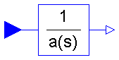
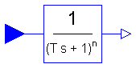

This package contains basic continuous input/output blocks.
Copyright © 1999-2002, Modelica Association and DLR.
This package is free software; it can be redistributed and/or modified under the terms of the Modelica license, see the license conditions and the accompanying disclaimer in the documentation of package Modelica in file "Modelica/package.mo".
ModelicaAdditions.Blocks.Continuous.ButterLow
This block defines the transfer function between the input u=inPort.signal[1] and the output y=outPort.signal[1] as an n-th order low pass filter with Butterworth characteristics and cut-off frequency f. It is implemented as a series of second order filters and a first order filter.
If transients at the simulation start shall be avoided the states x1 and xr need to be initialized with the start value of the input signal and the states x2 need to be initialized with zeros.
y = PT21*PT22*...*PT2(n/2)*PT1 u
Release Notes:
| Name | Default | Description |
|---|---|---|
| n | 2 | Order of filter |
| f | 1 | Cut-off frequency [Hz] |
block ButterLow
"Output the input signal filtered with a low pass Butterworth filter of any order"
import Modelica.Math.*;
extends Modelica.Blocks.Interfaces.SISO;
parameter Integer n(min=1) = 2 "Order of filter";
parameter SI.Frequency f=1 "Cut-off frequency";
output Real x1[m] "states 1 of second order filters (der(x1) = x2)";
output Real x2[m] "states 2 of second order filters";
output Real xr "state of real pole for uneven order otherwise dummy";
protected
Real z[m + 1];
Real polereal[m];
Real poleimag[m];
Real realpol;
Real k2[m];
Real D[m];
Real w0[m];
Real k1;
Real T;
constant Real pi=Modelica.Constants.pi;
parameter Integer m=integer(n/2);
parameter Real w=2*pi*f;
equation
k2 = ones(m);
k1 = 1;
z[1] = u;
// calculate filter parameters
for i in 1:m loop
// poles of prototype lowpass
polereal[i] = cos(pi/2 + pi/n*(i - 0.5));
poleimag[i] = sin(pi/2 + pi/n*(i - 0.5));
// scaling and calculation of secon order filter coefficients
w0[i] = (polereal[i]^2 + poleimag[i]^2)*w;
D[i] = -polereal[i]/w0[i]*w;
end for;
realpol = 1*w;
T = 1/realpol;
// calculate second order filters
for i in 1:m loop
der(x1[i]) = x2[i];
der(x2[i]) = k2[i]*w0[i]^2*z[i] - 2*D[i]*w0[i]*x2[i] - w0[i]^2*x1[i];
z[i + 1] = x1[i];
end for;
// calculate first order filter if necessary
if 2*m == n then
// even order
xr = 0;
y = z[m + 1];
else
// uneven order
der(xr) = (k1*z[m + 1] - xr)/T;
y = xr;
end if;
end ButterLow;
ModelicaAdditions.Blocks.Continuous.CritDamping
This block defines the transfer function between the input u=inPort.signal[1] and the output y=outPort.signal[1] as an n-th order filter with critical damping characteristics and cut-off frequency f=1/T. It is implemented as a series of first order filters.
If transients at the simulation start shall be avoided the states x need to be initialized with the start value of the input.
k
y = ------------- * u
(T * s + 1)^n
Release Notes:
| Name | Default | Description |
|---|---|---|
| n | 2 | Order of filter |
| f | 1 | Cut-off frequency [Hz] |
block CritDamping
"Output the input signal filtered with an n-th order filter with critical damping"
extends Modelica.Blocks.Interfaces.SISO;
parameter Integer n=2 "Order of filter";
parameter SI.Frequency f=1 "Cut-off frequency";
output Real x[n + 1];
protected
constant Real pi=Modelica.Constants.pi;
parameter Real w=2*pi*f;
equation
x[1] = u;
for i in 2:n + 1 loop
der(x[i]) = (x[i - 1] - x[i])*w/(2*pi);
end for;
y = x[n + 1];
end CritDamping;